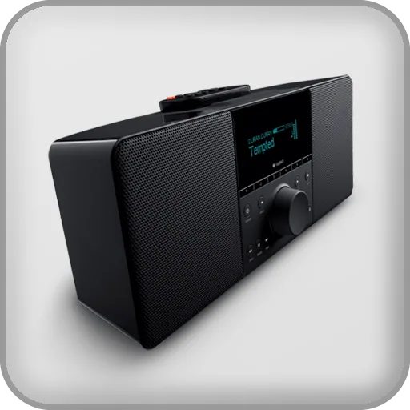
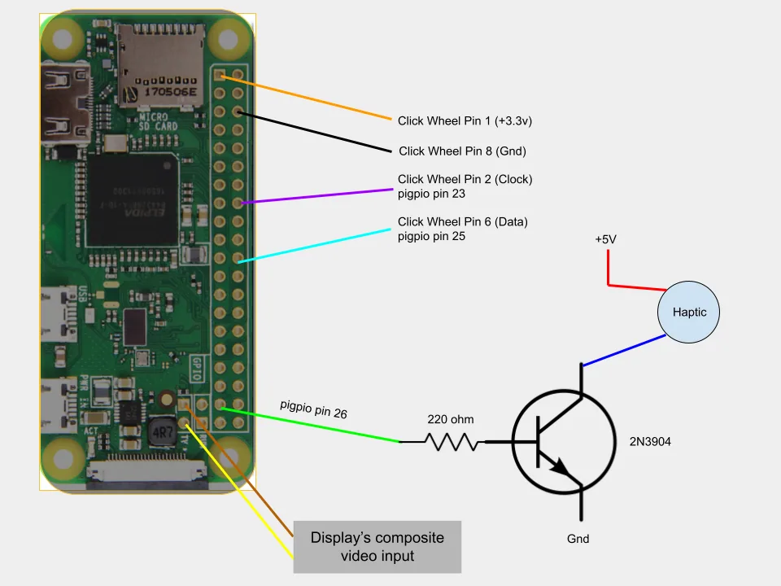
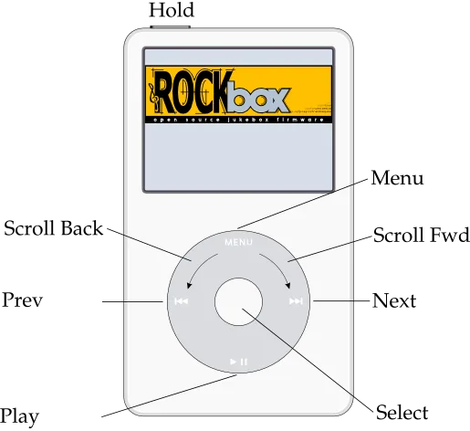
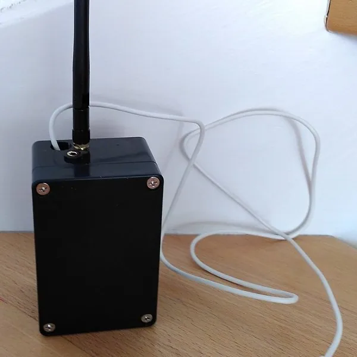
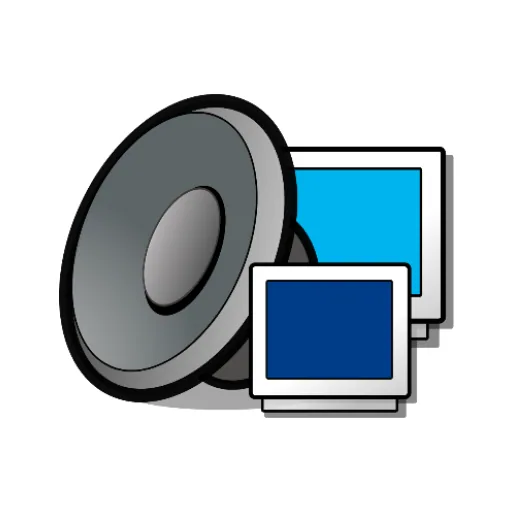
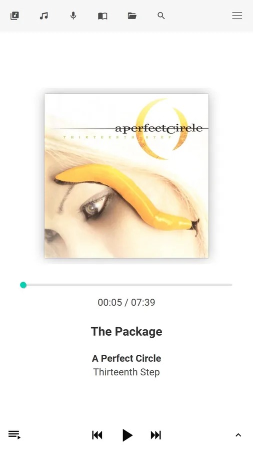
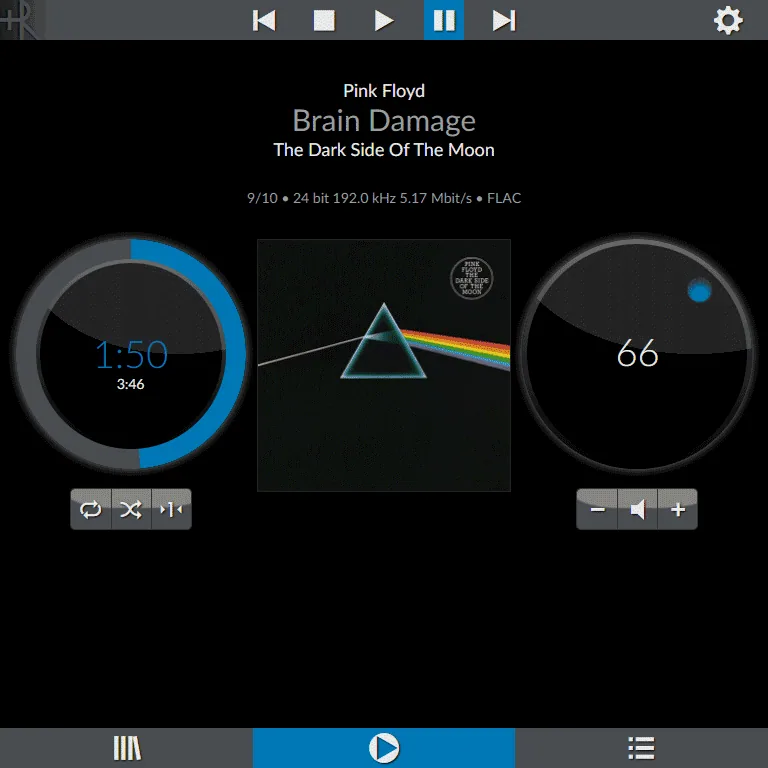
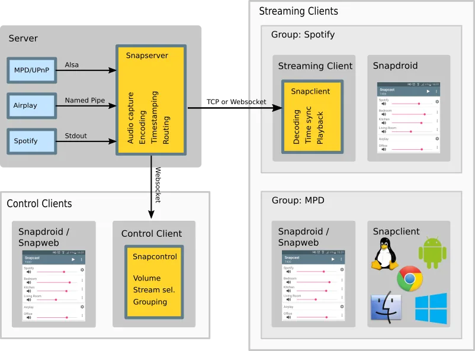

Lyrion Music Server
用本地音乐服务器延续 Squeezebox 设备和播放器生态。
当前显示第 1–20 条；使用筛选时会加载该分类的全部分页。

用本地音乐服务器延续 Squeezebox 设备和播放器生态。
 备用图
备用图将旧主机转为轻量网络音频播放器，连接 Squeezebox 生态服务器。

保留旧 iPod 的交互与外形，替换内部硬件成为网络音乐终端。

为兼容旧播放器提供开放固件和格式扩展。
备用图让现有网络音响接收 AirPlay 音频。

作者用 ESP32、VS1053 和外置天线让旧音响接收手机蓝牙音频，并链接两套实现代码与演示。
为旧功放或音箱增加蓝牙、AirPlay 与 Spotify Connect 串流入口。
备用图作为旧音频终端的 Spotify 接入基础。
评估把旧小主机作为专用网络音乐播放器。
备用图把旧电脑或单板机变成可扩展音乐服务端。

把旧电脑或单板机作为可远程控制的音乐播放端。

让旧主机统一服务和驱动多类现有音频设备。
 备用图
备用图把 Raspberry Pi 接入旧音响以增加现代无线音频入口。
评估把旧小主机改造成 Spotify Connect 接收端。

把 Raspberry Pi 与现有音响组合成网络播放器。

把旧电脑或单板机改造成同步多房间音频节点。
备用图把旧电脑或单板机用作无界面的 Spotify 播放端。
备用图把 ESP32 音频硬件用作网络音乐播放端。

评估把旧小主机改造成专用音乐播放器。
备用图教程分析回收的 VU 表头灵敏度，并比较 PWM 与 DAC 驱动，让指针显示树莓派负载或音频状态。
减少一个筛选条件，或换一个设备/型号词。